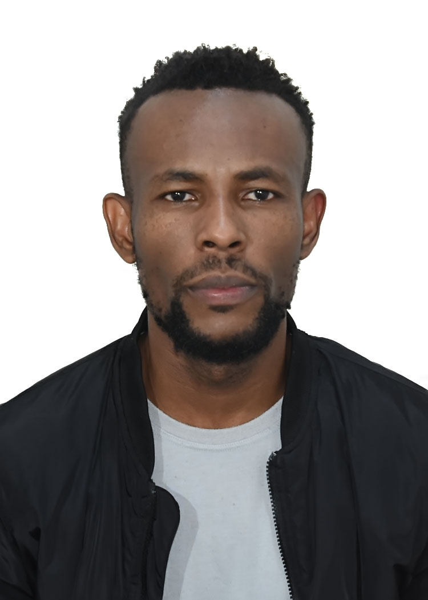

Sampson Chinedu Ngobi | WDD 130
My name is Sampson Chinedu Ngobi. I was born in Abia State Nigeria but Currently lives in Brasilia Brazil with my wife and our three children. I am a singer song-writer, an English language instructor and BYU Idaho student of Web and computer programming. I like to play soccer. My favorite colors are white, black and blue. I serve a full time mission in Nigerian calabar mission. I am a certified AWS cloud practioner. I am currently serving as an online institute teacher. I am making a career change from a community ophthalmic technician to a web and computer programer. I have visited a few places around the world, including, India , berlin Germany, and I currentlylive in Brasilia Brazil. I graduated from Ogun state College of Health Technology as an Ophthalmic technician. I worked an eye care provider for 5 years. I participated in many eye care Expeditions in Nigeria. It was an amazing career untill I moved to Brazil and discovered how hard language will be for me. I have spend last five years building skills to help make a trasition in my career.